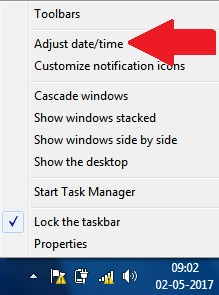
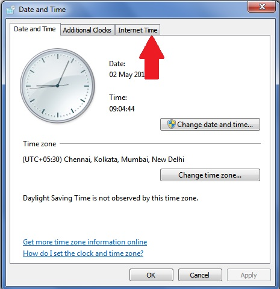
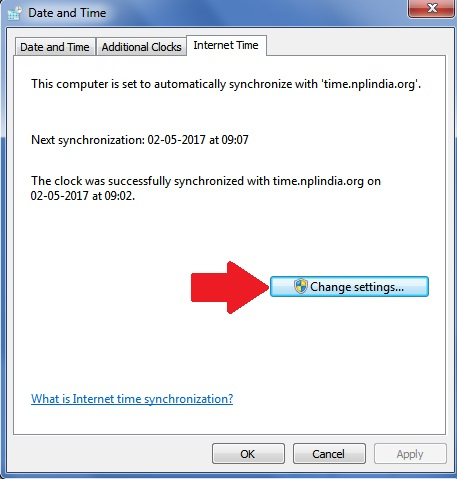
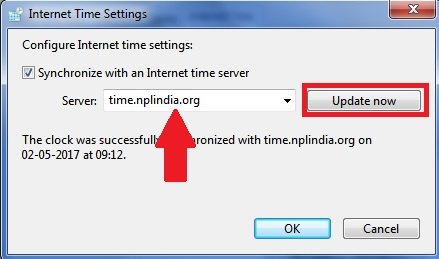

-
Right-click your clock and choose Adjust date/time
 -
Click on the Internet Time tab and then the Change Settings button

 -
Replace the default time server with time.nplindia.org
 - Click Update Now
- If the clock is not synchronized successfully, Click Update Now again